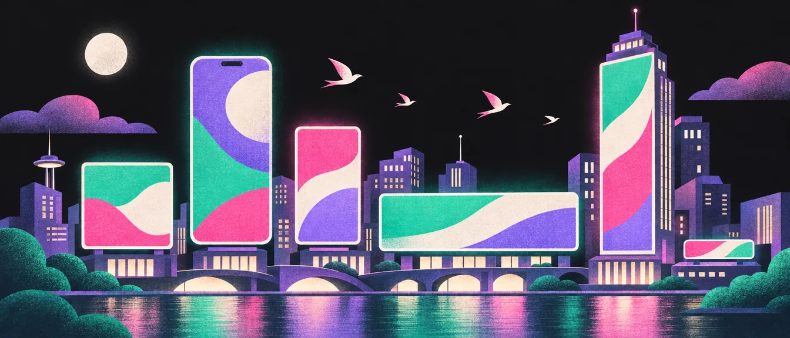
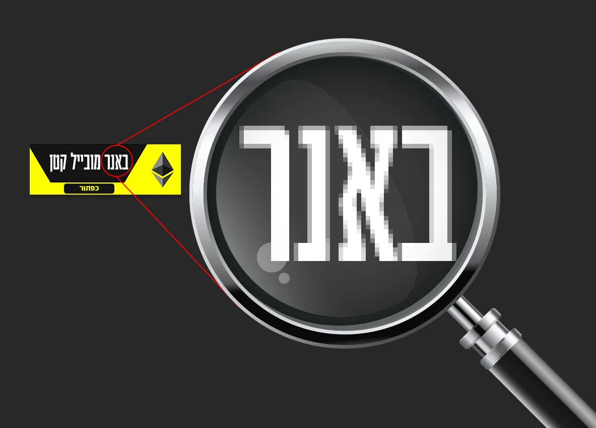
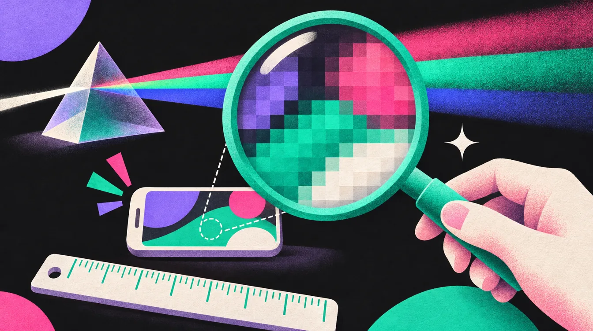
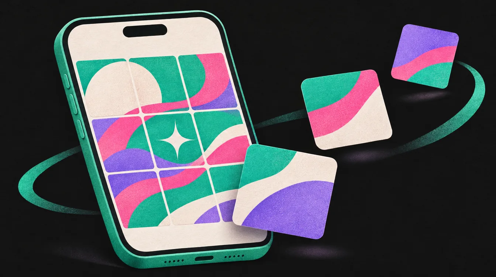

פרסום דיגיטלי
במיתוג דיגיטלי חשוב להבין את הפורמטים השונים של פרסומות ולהציג את העיצוב בצורה שתדמה שימוש אמיתי. כל פורמט נועד למטרה אחרת, פוסטים, סטוריז, באנרים ועוד, וכל אחד מהם דורש התאמה מדויקת של יחס, רזולוציה וגודל קובץ.

פורמטים לרשתות חברתיות
- פוסטים ריבועיים · יחס 1:11080×1080px
- פוסטים עומדים · יחס 4:51080×1350px
- סטוריז · יחס 9:161080×1920px
- באנרים רוחביים / וידאו · יחס 16:91920×1080px
- פייסבוק, תמונה לקישור או מודעה · יחס 1.91:11200×628px
לכל יחס יש היררכיה, קומפוזיציה וצפיפות תוכן אחרת: מה שעובד בריבוע לא „נמתח” לסטורי. שווה להראות סדרה של פורמטים כחלק מקמפיין אחד, כי ככל שהמותג נראה משכנע יותר בפורמטים מציאותיים, כך ההצגה שלו מקצועית יותר.
למה דווקא 4:5?
בפיד של אינסטגרם, פוסט עומד של 1080×1350 תופס את רוב המסך של הטלפון, ולכן הוא נחשב לפורמט שמקבל הכי הרבה תשומת לב. ריבוע תופס פחות, ותמונה רוחבית עוד פחות. עברו ל„על מסך הטלפון” בהדגמה למעלה ותראו את ההבדל.
ומאז 2025 אינסטגרם מקבלת גם פוסטים ביחס 3:4 (1080×1440), ורשת הפוסטים בפרופיל חותכת עכשיו כל פוסט למלבן עומד של 3:4. אז בכל יחס, שמרו את החשוב במרכז כדי שלא ייחתך בתצוגת הפרופיל.
האזור הבטוח בסטורי
בסטורי, החלק העליון מכוסה בשם המשתמש ובפס ההתקדמות, והתחתון בשורת התגובה ובכפתורים. השאירו בערך 250px למעלה ו־340px למטה בלי טקסט, בלי לוגו ובלי כפתור. ברילס גם הצד תפוס (לייק, תגובה, שיתוף), אז מרכזים את המסר.
המידות של האזורים התפוסים משתנות מעט בין אפליקציות ועדכונים. הכלל שלא משתנה: את החשוב שמים במרכז.
עוד מידות שכדאי להכיר
| איפה | מידה | יחס | הערה |
|---|---|---|---|
| יוטיוב, תמונה ממוזערת | 1280×720 | 16:9 | טקסט גדול, שנקרא גם בקטן |
| יוטיוב, באנר ערוץ | 2560×1440 | 16:9 | התוכן החשוב רק במרכז, 1546×423 |
| פינטרסט, פין | 1000×1500 | 2:3 | הפורמט המומלץ בפיד |
| לינקדאין, פוסט | 1200×1200 | 1:1 | מומלץ לפיד |
| אקס (טוויטר), תמונה בפוסט | 1600×900 | 16:9 | מוצגת בלי חיתוך |
המידות ברשתות משתנות מדי פעם, אז לפני עבודה חשובה בדקו את ההנחיות העדכניות. ומידות של דפוס, שילוט, כרטיסים ומסכים? הכול במדריך הקודם שלי לסטודנטים. מידות מדיה
באנרים דיגיטליים
מומלץ להכין סט באנרים בקמפיין אחד בגדלים הנפוצים ביותר, כדי לכסות את כלל הפלטפורמות. שימו לב: המספר הראשון מציין את הרוחב, והשני את הגובה (לדוגמה 300×250 = רוחב 300px, גובה 250px).
באנרים ריבועיים (Square)
- Small square200×200px
- Square250×250px
- Inline rectangle300×250px
- Large rectangle336×280px
באנרי מגדל (Tower)
- Skyscraper120×600px
- Wide skyscraper160×600px
- Half-page300×600px
- Portrait300×1050px
באנרי רקיע (Skyline)
- Banner468×60px
- Leaderboard728×90px
- Large leaderboard970×90px
- Billboard970×250px
כל הבאנרים על לוח אחד
רשימה של מספרים לא באמת מסבירה כמה Skyscraper צר וכמה Billboard רחב. כאן כל הבאנרים מצוירים באותו קנה מידה בדיוק, כולל באנרי המובייל, מקובצים לפי משפחה.
באנרים למובייל
באנרי מובייל מופיעים בתחתית של אתרים מסחריים או באפליקציות חינמיות. שימו לב: אלו באנרים קטנים מאוד!!! אין שם הרבה מקום, יש מעט מאוד פיקסלים!!!
חשוב לעצב אותם בפשטות ובבהירות, עם מסר אחד ברור וטקסט קריא. אל תנסו לדחוף לוגו, כותרת, תת־כותרת, כפתור ומחיר באותו באנר. זה פשוט לא עובד בגודל הזה.
המידות
- Mobile banner300×50px
- Mobile leaderboard320×50px
- Large mobile banner320×100px
- Medium rectangle (MREC)300×250px
MREC הוא בדיוק אותו מלבן של 300×250 מהמשפחה הריבועית (Inline rectangle). זה הבאנר הנפוץ ביותר, גם במחשב וגם בטלפון, כי אותה מידה בדיוק מתאימה לשניהם.
„זה מפוקסל!”
ואל תתלוננו שזה פאקינג מפוקסל! זה לא מפוקסל – אתם פשוט עשיתם 500% זום אין לתוך באנר של 300 פיקסלים. אז תנשמו, תתרחקו מהמסך, ואל תהיו מעצבנים.


טיפים טכניים

- WEB
- RGB
- 72dpi
- אם אתם עובדים בתוכנה וקטורית כמו Illustrator או InDesign, תוודאו שאתם עובדים במצב WEB, עם סביבת צבעים RGB וברזולוציה של 72dpi בלבד.
- הקפידו על טקסט קריא וברור. אל תעמיסו פרטים, כי במובייל כל פיקסל חשוב.
ולמה דווקא 72?
על מסך לא סופרים סנטימטרים, רק פיקסלים. כשהמסמך מוגדר ב־72, פיקסל אחד במסמך הוא פיקסל אחד בקובץ שתייצאו: מסמך של 300×250 ייצא כתמונה של 300×250 בדיוק. במסמך של 300dpi אותו באנר ייצא גדול פי ארבעה בערך, כבד, ובמידה הלא נכונה. ומסמך של דפוס בכלל עובד ב־CMYK, וזה כבר סיפור אחר. צבעי מסך מול דפוס
כמה מספרים מעולם הבאנרים
- משקל: באנר שמעלים לגוגל צריך לשקול עד 150KB. עוד סיבה לא להעמיס.
- חמשת הגדלים הנפוצים בגוגל: 300×250, 336×280, 728×90, 300×600 ו־320×100. אם אין זמן לכל הסט, מתחילים מהם. (בלוח למעלה יש כפתור שמסמן אותם.)
- מה נכנס לבאנר: מסר אחד, תמונה אחת, כפתור אחד. והלוגו, קטן.
סושיאל מדיה: מערכת פוסטים

בפרויקט מיתוג לא מספיק פוסט אחד יפה. צריך להראות מערכת פוסטים, שבה רואים שכל פוסט שייך לאותו מותג. לדוגמה:
- תמונת פרופיל ברשתות חברתיות: להראות מוקאפ של איך הלוגו ייראה (אינסטגרם, יוטיוב וכו'). הלוגו בתוך עיגול קטן, וכאן רואים אם יש לכם סמל שעובד לבד. מערכת הלוגו
- הדמיה של הלוגו באתר של המותג. לפחות המסך הראשון, במחשב ובטלפון.
- פוסט אינסטגרם
- סטורי
- פרסומת וידאו. אם אין זמן לסרטון שלם, לפחות הפריים הראשון והאחרון שלה.
- איך הלוגו ייראה על באנרים קטנים. סט מאותו קמפיין, למשל 300×250, 728×90 ו־320×50.
- לוגו על תמונה. הצילום צריך להיות לפי השפה של המותג. שפה צילומית
ואפשר להוסיף גם מם מותג: פוסט קליל בשפה של הרשת, שבודק אם הטון של המותג מחזיק גם בהומור.
ואיך כל זה נכנס למצגת ללקוח, אחרי הלוגו ולפני העולם הפיזי? הצגה ללקוח